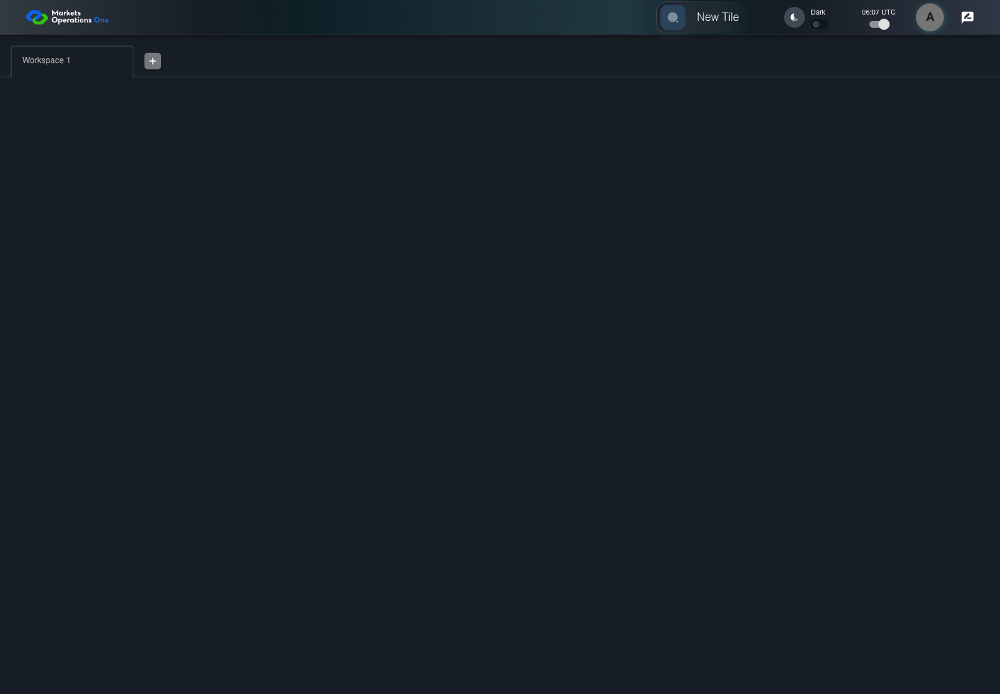
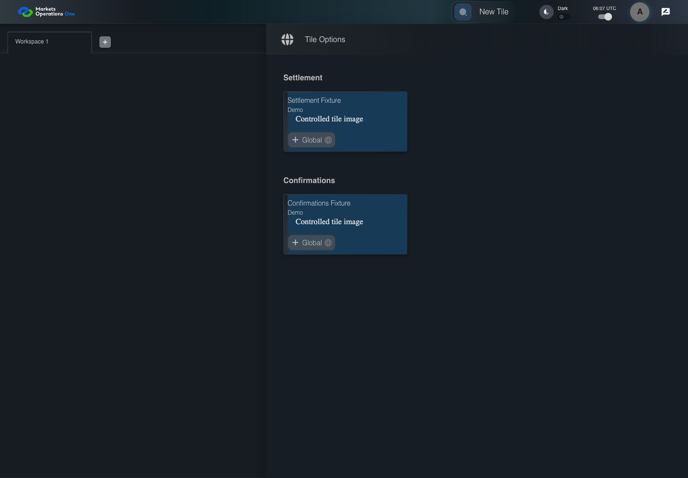

UI-CAT-003 render category names and declared tiles
PASS · application/run-050/ui-cat-003-render-category-names-and-declared-tiles-2b40218727ba-attempt-1 · ACTUAL_APPLICATION_LOCAL_SERVICES
Actual current React shell. Controlled login, validation, and activity renewal responses supply UI-USER-01, catalog, and entities. A controlled SystemJS React container displays routes and parameters. Local fixture SVGs replace catalog images. Identity, entitlements, and business tenant behavior are not established.
2026-10-22T06:07:48.520Z to 2026-10-22T06:07:52.324Z
Assertions and result · Artifact manifest · Exact run inputs and source hashes
Result SHA-256:93f5a235db9e35436c3c7ff1fbcc87ffd4f791ce01d387e32a3a7fb830bd93c1Screenshot capture: CAPTURED. Named frames: 7.
Step screenshot bindings: COMPLETE. 6/6 canonical steps have execution screenshots.
Bindings measure structural coverage only. They do not establish screenshot content quality or relevance.
Screenshot content review: NOT_REVIEWED. Recorded context: 0/7 frames. Identical image bytes: 4 repeated frames. Recorded context does not establish human visual review.
Canonical step timeline
Given User A is authenticated as fixture UI-USER-01 with the case-specific permissions
Execution: PASSED.
1. step-01 Visible state after step 1: Given User A is authenticated as fixture UI-USER-01 with the case-specific permissions
2026-10-22T06:07:50.379Z · 1440×1000
Step: /Users/lushevol/code/github/ratan-release-impact/workbench/tasks/ui-test-coverage-20261022/test-cases.md:6343
SHA-256:b0494e978fa6918bbd0d74284a0f5130c7fe4c5eff75eaa11fe5be962cab30e0And catalog categories Settlement and Confirmations each contain one tile
Execution: PASSED.
2. step-02 Visible state after step 2: And catalog categories Settlement and Confirmations each contain one tile
2026-10-22T06:07:50.462Z · 1440×1000
Step: /Users/lushevol/code/github/ratan-release-impact/workbench/tasks/ui-test-coverage-20261022/test-cases.md:6344
SHA-256:b0494e978fa6918bbd0d74284a0f5130c7fe4c5eff75eaa11fe5be962cab30e0Image bytes match frame 1. An unchanged image can be valid for consecutive assertions. This match does not establish correct step content.
When User A clicks section with text "New Tile" inside the shell application bar
Execution: PASSED.
3. step-03 Visible state after step 3: When User A clicks section with text "New Tile" inside the shell application bar
2026-10-22T06:07:50.736Z · 1440×1000
Step: /Users/lushevol/code/github/ratan-release-impact/workbench/tasks/ui-test-coverage-20261022/test-cases.md:6345
SHA-256:0103c3cb78754b233962598f790ff0f5467a899d379e836cd6ec92e571745933Then text with text "Settlement" inside the right drawer titled "Tile Options" is visible
Execution: PASSED.
4. step-04 Visible state after step 4: Then text with text "Settlement" inside the right drawer titled "Tile Options" is visible
2026-10-22T06:07:50.836Z · 1440×1000
Step: /Users/lushevol/code/github/ratan-release-impact/workbench/tasks/ui-test-coverage-20261022/test-cases.md:6346
SHA-256:0103c3cb78754b233962598f790ff0f5467a899d379e836cd6ec92e571745933Image bytes match frame 3. An unchanged image can be valid for consecutive assertions. This match does not establish correct step content.
And text with text "Confirmations" inside the right drawer titled "Tile Options" is visible
Execution: PASSED.5. step-05 Visible state after step 5: And text with text "Confirmations" inside the right drawer titled "Tile Options" is visible
2026-10-22T06:07:50.950Z · 1440×1000
Step: /Users/lushevol/code/github/ratan-release-impact/workbench/tasks/ui-test-coverage-20261022/test-cases.md:6347
SHA-256:2fb49cbb897cb5f2cf7ef8f7d259b8fc30e1c4ea61882d9ce816ff818687700dAnd each fixture category contains its declared fixture tile title as visible text
Execution: PASSED.
6. step-06 Visible state after step 6: And each fixture category contains its declared fixture tile title as visible text
2026-10-22T06:07:51.100Z · 1440×1000
Step: /Users/lushevol/code/github/ratan-release-impact/workbench/tasks/ui-test-coverage-20261022/test-cases.md:6348
SHA-256:2fb49cbb897cb5f2cf7ef8f7d259b8fc30e1c4ea61882d9ce816ff818687700dImage bytes match frame 5. An unchanged image can be valid for consecutive assertions. This match does not establish correct step content.
Additional named frames

The final visible state after the named test assertions.
2026-10-22T06:07:51.425Z · 1440×1000Step: Test source: /Users/lushevol/code/github/ratan-release-impact/workbench/e2e/audit-specs/catalog-profile-expanded.spec.ts:34
SHA-256:
2fb49cbb897cb5f2cf7ef8f7d259b8fc30e1c4ea61882d9ce816ff818687700dImage bytes match frame 6. An unchanged image can be valid for consecutive assertions. This match does not establish correct step content.
Screenshots establish visible state only. Assertions and traces support functional claims.